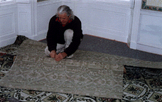

Burrows & Co. will be happy to supply an estimate for your particular project if you can supply the measurement for the room or area rug. The more precise measurements you can provide will assist in the accuracy of the cost estimate. Plans can be forwarded to qualified installers around the country who will quote installation or fabrication costs. Be sure to let me known what city or state your reside in, so we can make inquiries to the closest installer and include the relevant inland freight costs in the estimate.
We require a 2/3 deposit for the cost of the material, with the final 1/3 payment when the shipment arrives from England and prior to the installation or fabrication. The final installation charges are due upon completion or delivery, or paid to the installer if it is invoiced directly.
If you have engaged the services of an established interior designer or a licensed architect, please let me know from the outset of our discussions. Price considerations are offered to trade professionals with recognized credentials for their service in overseeing measurements, handling ordering details and overseeing the installation.
In several areas of the United States we refer inquiries to trade showrooms, or retail distributors. Please refer to Doing Business With Us. In other parts of the world we can refer you to local sales agents for the Stourvale Mill Collection.
A Brief History of English Carpets/Stourvale Mill Page
The William Morris Carpet Page
The Stourvale Mill Carpet Page
Go to J.R. Burrows & Company Main Page